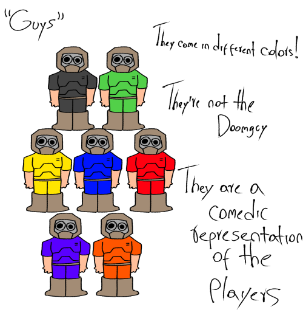

The Doomlads

| Same as the player damn bro what'd you expect? |
|---|
The Doomlads
The Doomlads are cartoonish simple drawn versions of the Doomguy, they are meant to be the representation of the Deathmatch players, they are "avatars", each one having the personality of the player controlling them. They're the character the players play as in Doomfoolery
Design
A Doomlad looks like a cartoonish and goofy version of the original Doomguy, except they have bulging eyes, and as a joke, an "Ñ" in the back of they'r helmet, the color of the armor depends on the players choice
Behaviour
The behaviour of a Doomlad again depends on the player, while in art, Doomlads behave similar to how a player would behave in-game (or atleast i try to make them look like that lol).